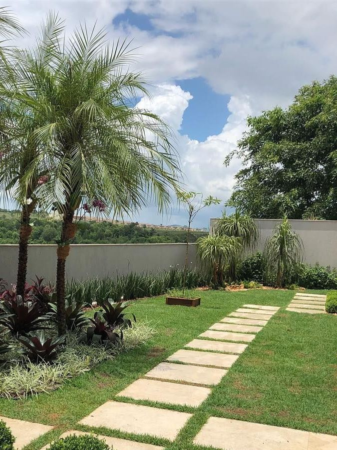
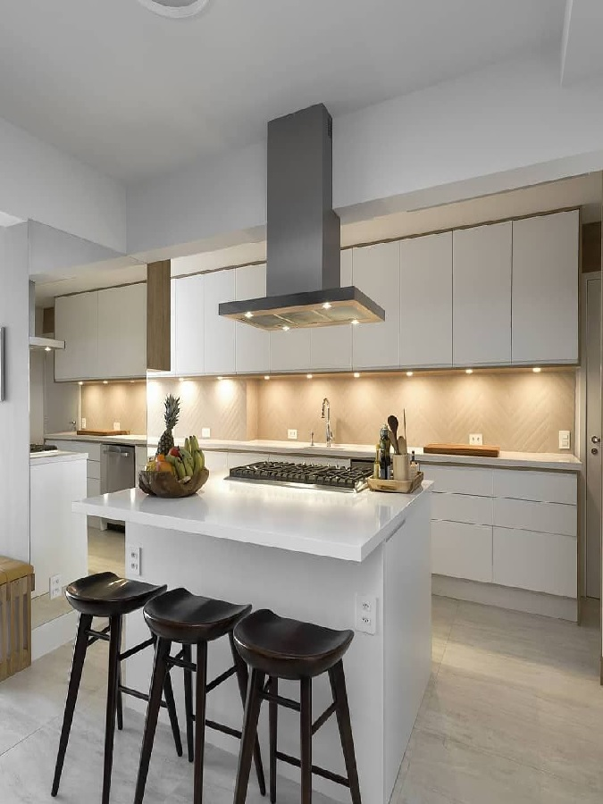

Hobbies
Um dos meus principais hobbies é ver o céu. Na minha opinião, é uma excelente forma tanto de relaxar como de ganhar inspiração. Apenas precisa de um pouco de imaginação! Sinta-se relaxado e tudo poderá brilhar na sua mente!

Outro dos meus hobbies é jardinagem. Gosto de jardinagem, porque posso apanhar sol, enquanto trato do jardim. O Sol é uma boa fonte de vitamina D, o que significa que faz bem à saúde! E não só! É também pelo facto que gastar mais tempo na natureza faz-me sentir em paz e tranquilo. Um bom hobby deveras!
Um hobby muito acalmante e que adoro: Cozinhar! Ao início, pode ser um pouco intimidante, mas cozinhar é um bom aliviante de stress. Quando tenho um dia stressado, ponho uma música e cozinho uma refeição e sinto-me ótimo!
